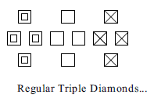
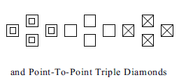
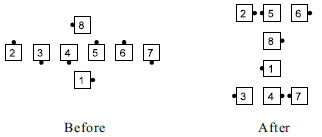

Triple Diamonds consist of three adjacent Diamond formations some of which have positions occupied by phantoms.
The two most common types of Triple Diamonds are illustrated below.
 
Triple Diamonds are analogous to Triple Boxes [C1] and Triple Waves/Lines/Columns [C2].
Example: Triple Diamond, Flip The Diamond

Triple Diamond calls are (4 or less)-dancer calls, requiring you to work only with the dancers in your Diamond. The historical application of 8-dancer calls such as Diamond Chain Thru is considered improper at C3A.